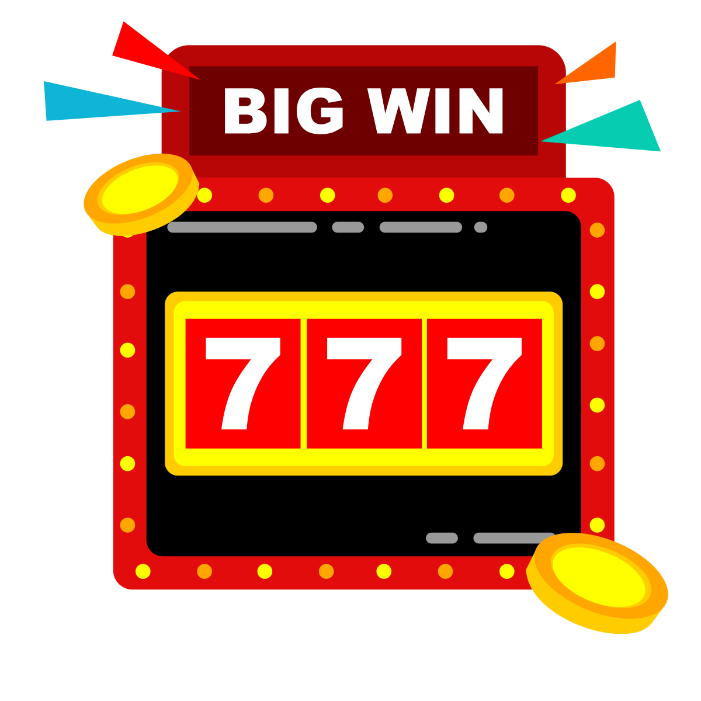

Тактики для победы в Wolf Game Slot
Игровые автоматы не зря являются самым популярным видом азартных развлечений в мире — они невероятно увлекательны и предлагают игрокам возможность крупного выигрыша. Однако многие игроки не знают, как увеличить свои шансы на получение приза в слотах. В этой статье мы расскажем вам, какие стратегии существуют в игровых автоматах, действительно ли они работают и как они могут помочь вам сорвать джекпот. Прочитайте до конца, чтобы узнать все, что вам нужно, про стратегии игры в слоты!
Читать статью